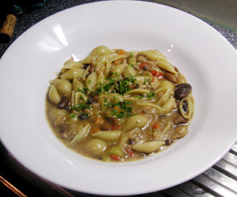

Pasta e Fagioli
5 von 61,5 kg über Nacht eingelegte Borlotti Bohnen (Oder in unserem Fall 500 g toskanische Bohnenmischung) ca. 1 std. in Salzwasser kochen, abgiessen und beiseite stellen. Eine Zwiebel, 2 Knoblauchzehen, eine Paprika, einen Stangensellerie und eine Karotte in Olivenöl 15 min andämpfen. Die Bohnenmischung dazugeben etwas weiter dämpfen. Mit etwas Rotwein ablöschen. Nach Bedarf mit Salz, Pfeffer, Muskatnuss, Cayennepfeffer und Rosmarin würzen. 2 Liter Wasser beigeben und aufkochen. Nun die Pasta mitkochen bis sie gar ist, sofort servieren.
